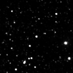

How to find a comet
Stars stay still between two photos. Comets move.
Pick a patch
Start where nobody has looked.
Remove the still stars
Subtract one photo from the other.


Blink the photos
Look for a dot that jumps.
Fuzzy or sharp?
Fuzzy with a tail is a comet. Sharp is an asteroid.
comet
asteroid
Say what you think
Comment with a tag. Your tag is your vote.
comet